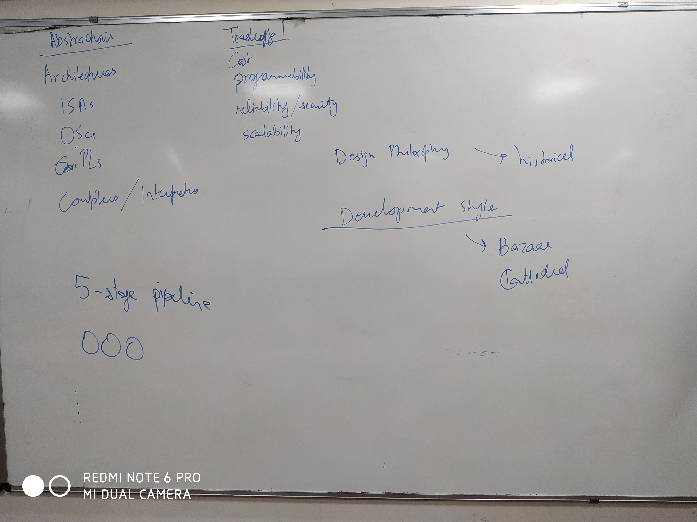
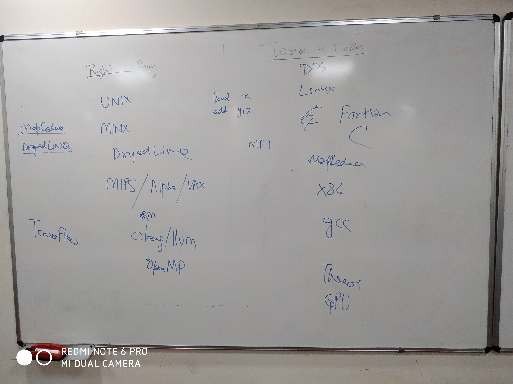

Introduction to high-performance computing
- Different types of computers? CPU, GPU, FPGA, ASIC, Microcontroller, Energy-harvesting devices, TPU, Babbage machine, supercomputer, mobile phone, Arduino, TI sensor nodes.
- Different types of ISAs? x86, ARM, Power, RISC-V: RISC vs CISC
- Different types of operating systems? xv6, hoh, linux, windows, hp-ux, aix, freeBSD, openBSD, UNIX, VAX/VMS, DOS.
- Different types of programming languages? C, C++, Java, Python, MapReduce, TensorFlow
- Different types of interpreters and compilers? GCC, CLANG, COMPCERT, ICC, MapReduce, Java-JIT, Cython, sanitizers
- Different design philosophies? Do the right thing, Worse is better
- Different development styles? Cathedral vs. Bazaar
Integration: what integrates better with what?



